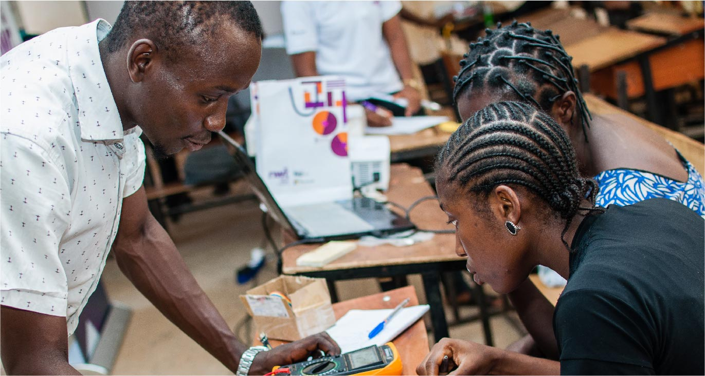
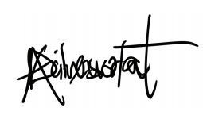

Back
Back
Girls must have a Seat at the ICT table.
| April 23, 2020


We need all hands-on deck, that means clearing hurdles for women and girls as they navigate careers in science, engineering, technology and math. -
Michelle Obama
It is no longer news that having more women in the tech space is not just a nice-to- have, but it has become increasingly important. The world is in its Fourth Industrial Revolution and there has never been a more crucial time than now for women to not just be spectators, but active participants leading this revolution. This is why as an organisation, Tech4Dev, is committed to providing opportunities to empower women to be effective players in the tech space
through our initiatives; Code4Impact Nigerian Women Techsters (NWT), and Women Techsters (WT).
Taking a journey down memory lane, during our pilot women coding program, Code4Impact, we trained 70 girls from University of Lagos(UNILAG), Lagos State University(LASU), Ladoke Akintola University of Technology(LAUTECH) and Yaba College of Technology(YABATECH). This initiative helped us achieve one major realization: Women are indeed interested in pursuing careers in the STEM field and are in need of a program such as ours that will awaken the giant in them. This meant that more opportunities for learning had to be created. We saw this same level of interest and enthusiasm when we called for registration for the Nigerian Women Techsters Initiative where almost 4000 women applied to be a part of the program and we were able to train and graduate 2,475 women across 12 states in Nigeria.
These women such as Fatima, Yewande, Patience, Tomi, Ndutim amongst others have gone on to start careers in technology, study STEM at an advanced level, and start technology and tech-enabled businesses. While teaching deep tech skills, we also empower these women with soft skills to build confidence to enable them to compete effectively in what was once considered a ‘men-only ‘field.
In keeping with our mission to empower people with digital skill opportunities to access decent work and the success of the NWT Initiative, we have decided to expand this vision with the Women Techsters (WT) Initiative, where we aim to train 5 million women in digital and deep tech skills across Africa by 2030.
This journey hasn’t been without its challenges, but we have been able to achieve all of these with the huge support of our amazing partners such as Microsoft, Prunedge, GIZ, Hacey Health, Access Bank, US Mission in Nigeria, Dev District, Federal Ministry of Labour, Ondo state Government, Imo State Government, Kano State Government, Edo Jobs, North East Humanitarian Hub, StartUp Kano, Coven Labs, Nzukor Labs, Terc Hub amongst many other organizations and individuals passionate about ensuring that women are equipped with the skills to compete equally and fairly in STEM fields.
Bridging the gender divide between men and women in STEM is no small feat, and if we are ever going to be ready to achieve equality globally, we need to create more opportunities for women to learn. It starts by debunking the myth that STEM is for men and actively encouraging and advocating for more women to take up these opportunities.
As we celebrate this International Girls in ICT Day, as an organisation, it is a reminder to continue to empower women and give them opportunities to learn and build careers in tech because more women need to know that a career in tech is no longer an impossible dream – It has now become a realistic aspiration.
